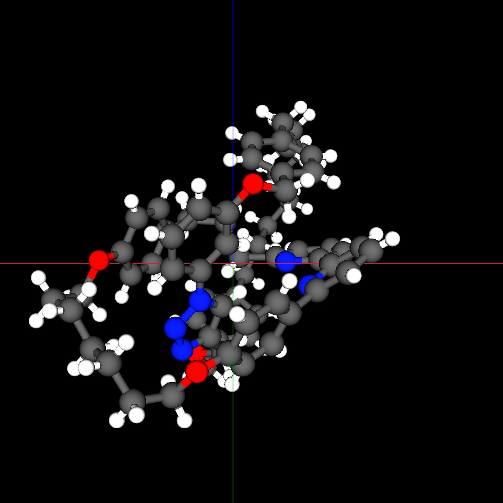
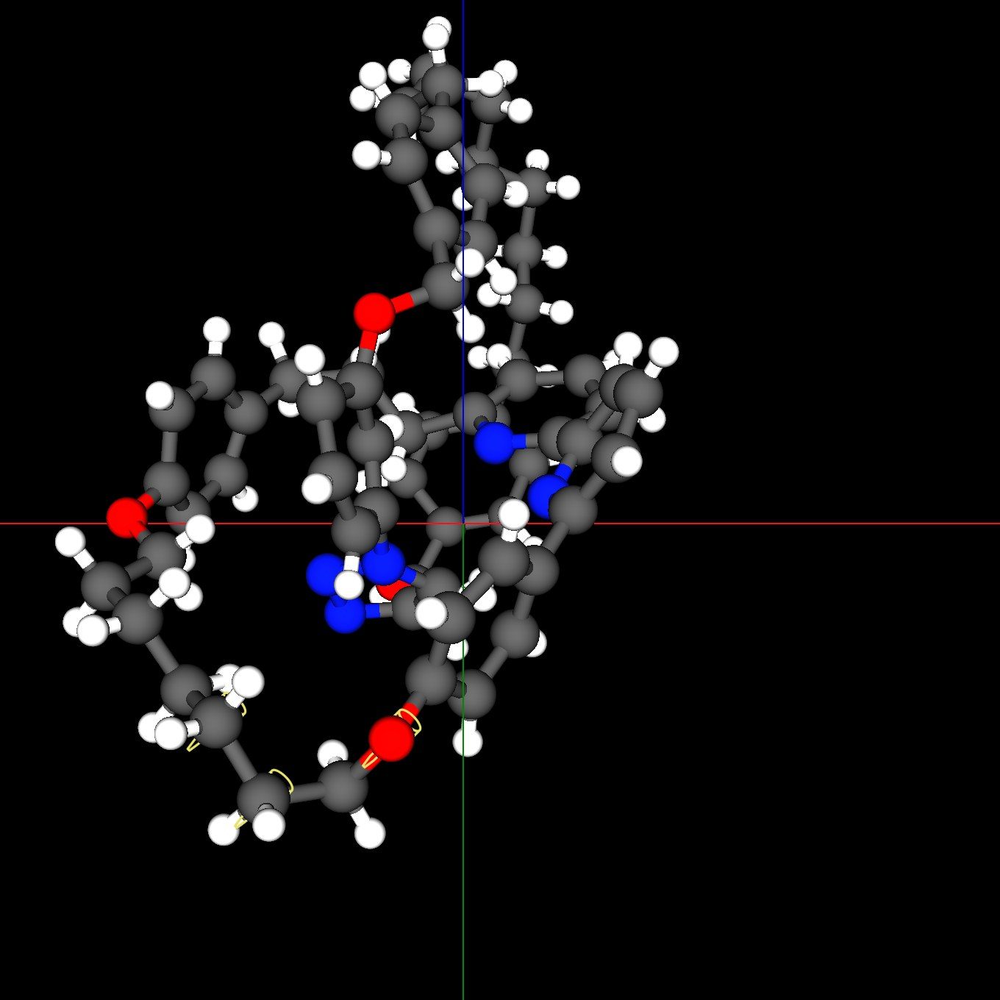
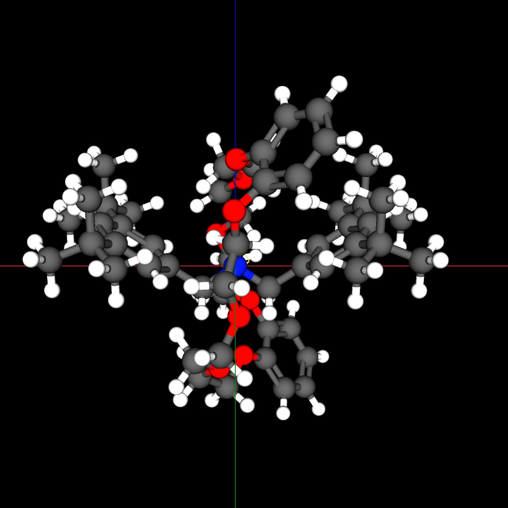
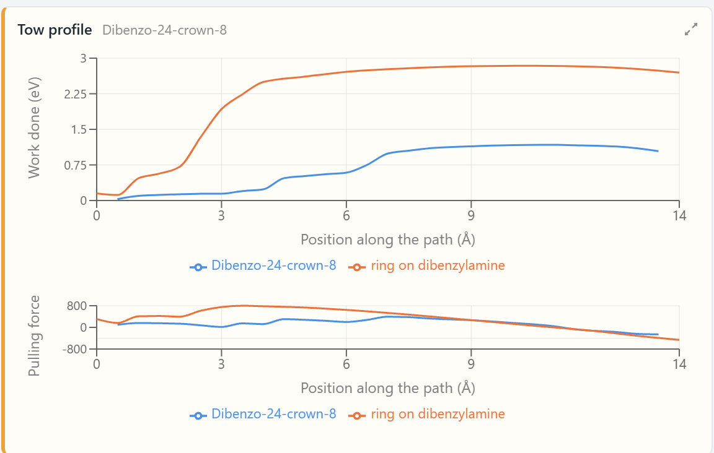
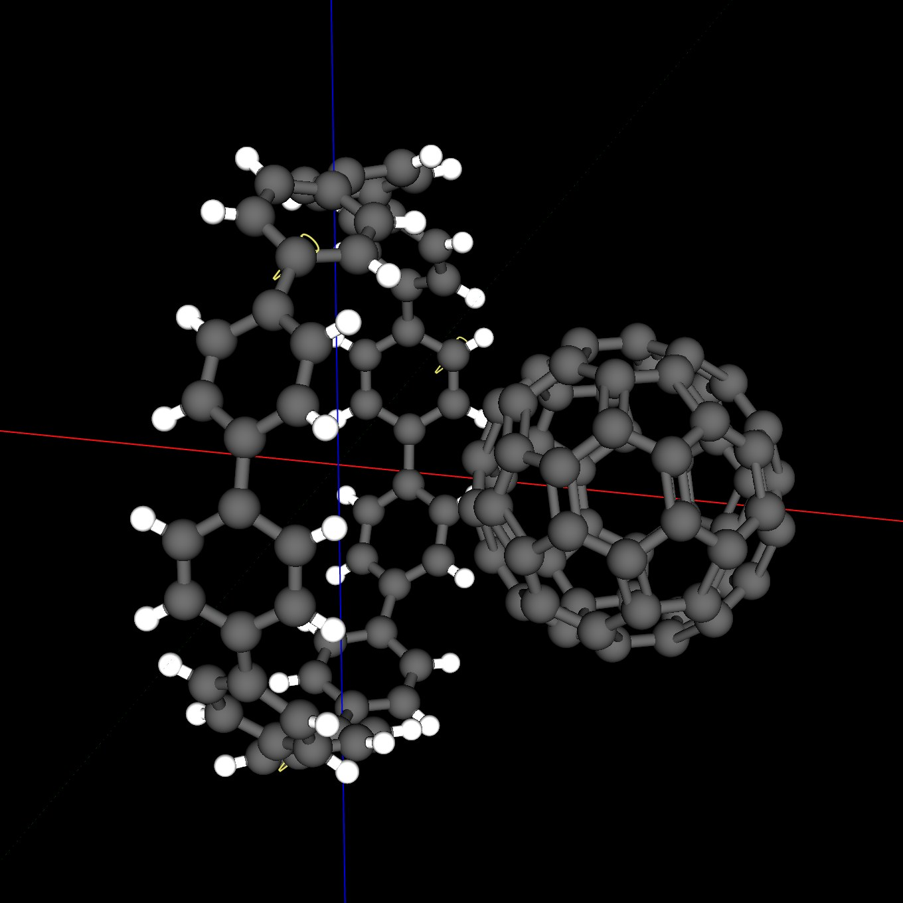
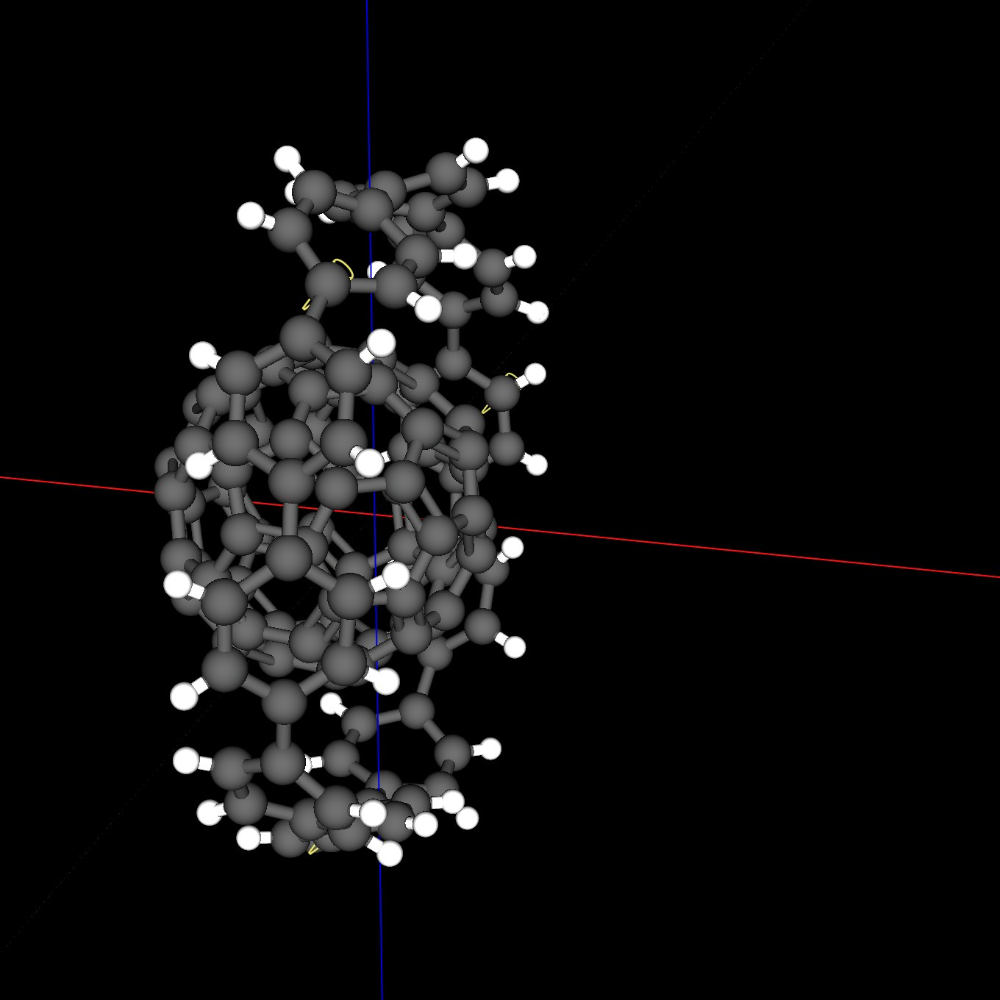

Interlocked and Nested Molecules: Catenanes, Rotaxanes, and Nanohoops
AIMS links two rings like a chain, threads a ring on an axle with stoppers, and nests a buckyball in a hoop, and an AI agent tests each pair with heat and with a pull.
Two molecules can be held together without a chemical bond between them. In a catenane, two ring-shaped molecules are linked like two links of a chain. In a rotaxane, a ring is threaded on an axle whose ends are too wide for the ring to pass. Chemists call these molecules interlocked: the parts cannot separate unless a covalent bond breaks. A second group of molecules is nested: one molecule sits inside another and can leave, and the attraction between the two holds it in place. AIMS models every atom of these pairs, and an AI agent sets up the experiments. A student asks a plain-language question, and the agent builds the molecules, heats them, pulls on them, and posts the measured data in the chat. This article follows three pairs: a catenane, a rotaxane, and a buckyball nested in a carbon nanohoop. In the window below, two linked rings move at 300 K. Press Play and watch each ring slide through the hole of the other.
The two rings of a catenane, in the arrangement they have in its crystal. Each ring passes through the hole of the other, and no covalent bond joins the two.
What Is a Mechanical Bond?
A covalent bond joins two atoms that share electrons. A mechanical bond joins two molecules through their shapes: a ring cannot pass through another closed ring, and a ring cannot pass over a stopper wider than its hole. In 1960 Wasserman made the first catenane by closing one ring in the presence of another, and a small fraction of the rings closed around their partners. In 1983 Dietrich-Buchecker, Sauvage, and Kintzinger found an efficient route: a copper ion holds two half-rings crossed over each other while a reaction closes them into two linked rings. Jean-Pierre Sauvage shared the 2016 Nobel Prize in Chemistry with Fraser Stoddart and Ben Feringa for the design and synthesis of molecular machines, and interlocked molecules are the moving parts of many of those machines.
The companion article on supramolecular chemistry shows hosts that hold guests through attraction, and the article on molecular machines shows parts that move on a signal. This article asks one question of each pair: what keeps the two molecules together?
The Forces and the Structures in the Model
Two forces act between two molecules in this lab: the electrostatic force of Coulomb's law between the partial charges of the atoms, and the Lennard-Jones force, with the atom sizes of the Universal Force Field. The Lennard-Jones force attracts two atoms weakly when they are a few ångströms apart and repels them strongly when they overlap. The repulsion is the reason a ring cannot cross a ring in the model. The covalent bonds of a molecule in this lab are springs that do not break.
The catenane and the nanohoop are too large for the three-dimensional structures of the PubChem database. The agent took their shapes from crystal structures in the Crystallography Open Database, which holds the measured positions of the atoms in a crystal. The lab starts each molecule in the shape that X-ray diffraction measured.
Running Experiments by Asking
AIMS is an AI-native environment. Building the molecules, heating them, pulling on them, and plotting the results are the agent's work. A student asks the agent to "hold one ring and pull the other away", and the agent recognizes the intent, configures the lab, runs the experiment, and posts the results in the conversation.
Go to AIMS and open the list of examples, with the lightbulb button on the toolbar or the Examples item in the main menu (☰). Open A Catenane: Two Linked Rings from the list (Nanotechnology, Molecular Machines), open the chat, and type the prompts below. The answer to the third prompt in the example keeps its last frame: press "Load this state" on its card and the lab shows the two rings pulled tight.
- Sliding — “Run it for 30 ps and chart the distance between the centers of the two rings.”
- Heat — “Does heat separate them? Try 600 K and 1000 K.”
- Pull — “Hold ring A and pull ring B away with the tow at 100 m/s. Then do the same with the two rings side by side, without the link.”
Two Linked Rings Slide and Stay Together
The catenane was made in 2018 by Lewis, Modicom, and Goldup, and its crystal structure is entry 4132105 of the Crystallography Open Database. One ring has 70 atoms and the other has 74. In the crystal the centers of the two rings are 3.7 Å apart.
The agent ran the two rings for 30 ps at 300 K. The distance between their centers averaged 3.5 Å and stayed between 3.1 and 3.9 Å. The agent also followed the place where each ring passes through the other. Each ring moved about 30° of the way around the other, and a full circuit is 360°. The two rings slide through each other with the thermal motion, and they stay linked. The second prompt repeats the run at two higher temperatures.
| Temperature | Ring centers apart, average | Farthest apart | Ring B around ring A | Ring A around ring B |
|---|---|---|---|---|
| 300 K | 3.5 Å | 3.9 Å | 30° | 30° |
| 600 K | 3.7 Å | 4.6 Å | 180° | 120° |
| 1000 K | 4.3 Å | 6.1 Å | 350° | 200° |
The catenane at three temperatures, 30 ps each. The last two columns give the angle through which one ring moved around the other during the run.
At 1000 K the centers of the rings moved at most 6.1 Å apart, and ring B traveled almost a full circuit around ring A. Two molecules held together by attraction alone separate at that temperature. The two rings of the catenane stay together because each ring passes through the other, and a closed ring cannot cross a closed ring.
A Pull Does Not Separate the Rings
The third prompt fixes three atoms of ring A in place and pulls ring B away with the tow of flight mode. The tow works like optical tweezers: a spring joins the center of ring B to a point that moves at 100 m/s, and the spring applies at most about 800 pN. For a comparison, the agent lifted ring B 11.5 Å out of ring A, so that the same two rings lie next to each other without the link, and pulled again.
| The two rings | Attraction before the pull | Largest pulling force | Work done by the tow | Result |
|---|---|---|---|---|
| Linkedthe catenane | 180 kJ/mol | 1,000 pN | 2.1 eV | together after 40 ps |
| Side by sidethe same rings without the link | 65 kJ/mol | 340 pN | 0.9 eV | apart after 9 ps |
One ring held and the other pulled at 100 m/s. The largest force is an average over 250 fs. The tow applies at most about 800 pN on average, and the ring moves against the spring, so single readings exceed 800 pN.
The tow reached its limit on the linked rings and stayed there for 33 of the 40 ps. The centers of the rings moved at most 5.5 Å apart: ring B went as far as the link allows and stopped. The two rings without the link came apart after 9 ps at 340 pN, the force that overcomes the attraction between them. The atoms are the same in both rows of the table. The link is the difference.


The two linked rings at the start (left), and the two rings pulled tight by the tow, loaded by the "Load this state" card (right). The yellow pins mark the three fixed atoms of ring A.
A Rotaxane: Stoppers Keep the Ring On
A rotaxane has a group at each end of its axle that is wider than the hole of the ring. The group is called a stopper. No covalent bond joins the ring to the axle, and chemists call the connection a mechanical bond. The window below tests a stopper directly. It holds a dibenzo-24-crown-8 ring, a circle of 24 atoms with eight oxygen atoms, on an axle with one nitrogen atom and a stopper at each end. The axle is dibenzylamine with two tert-butyl groups on each benzene ring. A tert-butyl group is a carbon atom bonded to three methyl groups. The axle has 78 atoms and no charge, so no charge holds the ring, and the shape of the two ends is the one thing that keeps the ring on the axle. The PubChem database has no structure for this axle, and the agent built it from dibenzylamine by replacing two hydrogen atoms on each benzene ring with tert-butyl groups.
A dibenzo-24-crown-8 ring around the nitrogen atom (blue) of an axle with two tert-butyl groups on each benzene ring. The nitrogen atom is fixed in place.
A ring stays on an axle at 300 K with or without stoppers, because the attraction between the ring and the axle is many times the thermal energy. A test of the stoppers therefore needs a pull. The test uses the same tow as the pull on the catenane: a spring that joins the center of the ring to a point moving at a constant speed and applies at most about 800 pN. The nitrogen atom of the axle is fixed in place, so the pull moves the ring along the axle.
Open A Rotaxane and Its Stoppers from the list of examples (Nanotechnology, Molecular Machines), press Play, open the chat, and type the prompts below. The pull can also be done by hand: enter flight mode, aim at the ring, and press T. The answer to the first prompt in the example keeps its last frame: press "Load this state" on its card and the lab shows the ring pulled against the stopper.
- Stoppers — “Pull the ring along the axle at 100 m/s and see whether it comes off.”
- Benzene ends — “Replace the axle with plain dibenzylamine, which has no tert-butyl groups, and pull the ring again.”
- Chain ends — “Now try dihexylamine, whose ends are plain chains of carbon atoms, and compare the three axles.”
Pulling the Ring Along Three Axles
The agent pulled the ring toward one end of each of three neutral axles at 100 m/s and recorded the pulling force and the work done by the tow.
| Axle | End of the axle | Largest pulling force | Work done | Ring came off |
|---|---|---|---|---|
| Dihexylamine | chain of six carbon atoms | 400 pN | 1.2 eV | after 10 ps |
| Dibenzylamine | benzene ring | 830 pN | 2.8 eV | after 11 ps |
| Stoppered axle | benzene ring with two tert-butyl groups | 910 pN | 2.0 eV | no, in 40 ps |
The same ring pulled along three neutral axles at 100 m/s. The largest force is an average over 250 fs while the ring was on the axle. The tow applies at most about 800 pN on average, and the ring moves against the spring, so single readings exceed 800 pN.
The ring left the chain of dihexylamine after 10 ps. The largest force was 400 pN, half the limit of the tow, and the tow did 1.2 eV of work. That work pays for the Lennard-Jones attraction between the ring and the chain. On dibenzylamine the force rose to the limit of the tow, and the tow waited at its limit for about 1 ps while the ring passed over the benzene ring. The ring left the axle after 11 ps, and the tow did 2.8 eV of work. A benzene ring is wider than a chain, and the crown ether ring stretches to pass it.
On the stoppered axle the force reached the limit within a few picoseconds, and the tow stayed at its limit for 33 of the 40 ps of the pull. The center of the ring moved at most 2.4 Å from the nitrogen, and the axle stayed inside the ring for the whole pull. The benzene rings of this axle are next to the nitrogen, so the ring met the first tert-butyl groups after about 2 Å and stopped there. The same ring and the same pull gave three results, and the end group of the axle decided each one. On a charged axle, the charged nitrogen alone held the ring against the tow for more than 20 ps in a trial run, so the three axles of this test are neutral.
The bonds of the molecules in this lab cannot break. A real rotaxane loses its ring when a covalent bond of the axle or the ring breaks. A covalent bond breaks at a force more than twice the limit of the tow.


The ring on the stoppered axle at the start (left), and the Tow Profile card that the agent posted for the pulls without stoppers (right). The orange curves are the pull on dibenzylamine and the blue curves are the pull on dihexylamine. The force falls below zero after the ring leaves the axle, when the ring moves ahead of the spring.
A Ball Nested in a Hoop
The ring of a rotaxane and the rings of a catenane cannot leave. A nested guest can leave, and attraction holds it. A cycloparaphenylene is a hoop of benzene rings joined edge to edge, the shortest possible carbon nanotube, and chemists also call it a carbon nanohoop. Jasti, Bhattacharjee, Neaton, and Bertozzi made the first nanohoops in 2008. The hoop of ten benzene rings is 13.8 Å across, the width of a (10,10) nanotube, and a buckyball is 7.1 Å across. The gap between the two is the distance at which the carbon atoms of two molecules rest against each other. In 2011 Iwamoto, Yamago, and coworkers found that this hoop takes up a buckyball in solution and called the pair the shortest fullerene peapod. In 2012 Xia, Bacon, and Jasti measured the crystal structure of the pair, with the ball at the center of the hoop.
The window below holds the hoop (C60H40, 100 atoms) in the shape it has in that crystal, entry 1515076 of the Crystallography Open Database, and a buckyball 7 Å from the center of the hoop along its axis. Three carbon atoms of the hoop are fixed in place. The lab runs at 300 K with the Langevin thermostat, which gives every atom small random pushes. Press Play and watch the ball.
A hoop of ten benzene rings and a buckyball on its axis. The hoop draws the ball in within a few picoseconds of Play.
Open A Buckyball in a Nanohoop from the list of examples (Nanotechnology, Molecular Machines), open the chat, and type the prompts below. The answer to the first prompt in the example keeps its last frame: press "Load this state" on its card and the lab shows the ball in the hoop.
- Catch — “Run it, and chart the distance from the center of the ball to the center of the hoop.”
- Turning — “Does the ball turn inside the hoop? Measure how fast it turns, and compare with a buckyball that is alone.”
- Grip — “How strongly does the hoop hold the ball? Pull it out along the axis with the tow at 50 m/s, and compare with other hosts.”
The Hoop Holds the Ball and Lets It Turn
The hoop caught the ball after 2.1 ps. For the rest of the 13 ps run the center of the ball stayed 0.9 Å from the center of the hoop on average and at most 1.8 Å. In the crystal the ball lies at the center of the hoop. The second prompt follows the atoms of the ball for 30 ps and adds up the angle through which the ball turned, in any direction.
| Buckyball | Angle turned in 30 ps | Average turning rate |
|---|---|---|
| In the hoop | 1.8 full turns | 22° per ps |
| Alone | 1.6 full turns | 19° per ps |
| Free sphereof the same size and mass, calculated | 19° per ps |
The turning of a buckyball at 300 K, inside the hoop and alone, over 30 ps. The last row is the average rate of a sphere with three free axes of rotation.
The ball turned inside the hoop as fast as a ball that is alone. A buckyball has nearly the same surface on every side, so a turn changes almost nothing in its contact with the hoop, and the hoop does not resist the turn. The hoop holds the position of the ball and leaves its direction free. A ball bearing works the same way. The direction of the turning changes at random, because the thermal motion of the atoms is the one thing that drives it.
Four Hosts for a Buckyball
The third prompt pulls the ball out of the hoop along its axis at 50 m/s. The ball came out after 28 ps. The largest force was 740 pN, below the limit of the tow, and the tow did 2.3 eV of work, which is 220 kJ/mol. Before the pull the attraction between the ball and the hoop was 230 kJ/mol. A nested guest leaves when a pull supplies the energy of the attraction. The table puts the hoop next to three other hosts for a buckyball that this lab measured with the same force field.
| Host | Contact with the ball | Attraction to the ball |
|---|---|---|
| One corannulene bowl | one side | 60 kJ/mol |
| Buckycatchertwo bowls and a tether | two sides and the bottom | 190 kJ/mol |
| [10]Cycloparaphenylene hoop | all the way around, once | 230 kJ/mol |
| (10,10) nanotube18 Å long | all the way around, along the whole ball | 540 kJ/mol |
The Lennard-Jones attraction between a buckyball and four hosts. The bowl and the buckycatcher are measured in the article on molecular machines, and the nanotube in the article on supramolecular chemistry.
The attraction grows with the number of carbon atoms that a host places at the resting distance from the ball. The energies are too large. The Universal Force Field gives two carbon atoms an attraction about twice as strong as the attraction fitted to graphite, and in a real solution the solvent competes with the ball for the inside of a host. The order of the four hosts depends on their shapes.


The buckyball outside the hoop at the start (left), and the ball inside the hoop, loaded by the "Load this state" card (right).
What the Lab Cannot Show
The covalent bonds of the molecules in this lab do not break. The lab therefore shows that heat and a pull of 800 pN leave a catenane and a rotaxane intact, and it cannot show the force at which one of them comes apart. Grandbois and coworkers pulled single molecules with an atomic force microscope in 1999 and measured that a covalent bond breaks at a force of about 2 nN. The lab is also a vacuum with fixed charges, and the bonds of the molecules taken from crystal structures were all entered as single bonds, so the attraction between two molecules is rough. The shapes come from measured crystals, and the results that depend on shape are the reliable part: which pairs stay together, how the rings slide, and where the ball sits.
What the Simulations Produced
The simulations were given the measured shapes of the molecules and the charges and sizes of the atoms. Everything below came out of them:
- A sliding link — the two rings of a catenane stay 3.1 to 3.9 Å apart at 300 K while each moves about 30° around the other, and at 1000 K one ring travels almost a full circuit around the other.
- Heat — at 1000 K the centers of the two linked rings move at most 6.1 Å apart.
- A pull — a pull of up to 800 pN for 40 ps moves the linked rings 5.5 Å apart, and the same two rings without the link separate at 340 pN.
- A stopper — the same pull takes a ring off a chain of carbon atoms at 400 pN and off a benzene ring at the limit of the pull, and the ring stays on an axle with tert-butyl stoppers.
- A nested ball — a hoop of ten benzene rings draws a buckyball in after 2.1 ps and holds it 0.9 Å from its center.
- A ball bearing — the ball turns at 22° per picosecond inside the hoop and at 19° per picosecond alone.
- Four hosts — a bowl, a buckycatcher, a hoop, and a nanotube attract a buckyball with 60, 190, 230, and 540 kJ/mol.
Conclusion
This article uses a catenane, a rotaxane, and a buckyball in a nanohoop to illustrate a new way to learn science: students converse with an AI agent that turns a plain-language question into a molecular dynamics experiment and hands back measured data. The mechanical bond, the idea behind the 2016 Nobel Prize in Chemistry, becomes something students watch and measure for themselves in a browser: how two linked rings slide through each other and stay together at 1000 K, how a stopper keeps a ring on an axle against a pull, and how a hoop holds a ball in place and lets it turn. By pairing a physically grounded simulation with an AI that can set it up and run it, AIMS turns a student's curiosity into a genuine scientific investigation of the ways molecules hold each other.
← Back to AIMS